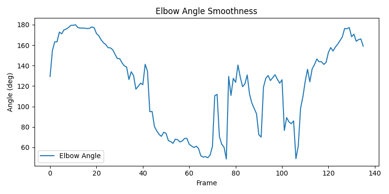

Score: 5/10
Feedback: Front foot a bit closed/open; point the toe more towards the ball.
Score: 9/10
Feedback: Stable head position over the front knee at impact.
Score: 9/10
Feedback: High elbow (179°) supporting a controlled downswing.
Score: 5/10
Feedback: Noticeable lateral lean; stay taller over the ball.
Score: 8/10
Feedback: Nice extension through the ball.
Elbow Angle Std Dev: 41.44 deg
RMS Jerk: 161851.26 deg/s³
Smoothness Score (0–10): 0.0
